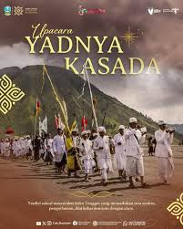

Tradisi Kasada yang setiap tahun diadakan di Kawah Gunung Bromo
Bulan Kasada bagi Suku Tengger adalah momen suci untuk menghormati leluhur dan menjaga tradisi. Acara ini bukan sekadar upacara, melainkan ritual yang sarat makna spiritual dan menjadi identitas budaya masyarakat Tengger. Upacara Yadnya Kasada diselenggarakan sebagai bentuk rasa syukur atas hasil panen dan permohonan keselamatan kepada Sang Hyang Widhi Wasa serta roh leluhur yang bersemayam di Gunung Bromo.
Legenda Roro Anteng dan Joko Seger menjadi fondasi utama upacara ini, menceritakan pengorbanan anak bungsu mereka, Raden Kusuma, demi kemakmuran anak cucunya. Oleh karena itu, masyarakat Tengger terus menjaga tradisi ini dengan melarung sesaji ke dalam kawah sebagai wujud janji dan bakti.Legenda Roro Anteng dan Joko Seger menjadi fondasi utama upacara ini, menceritakan pengorbanan anak bungsu mereka, Raden Kusuma, demi kemakmuran anak cucunya. Oleh karena itu, masyarakat Tengger terus menjaga tradisi ini dengan melarung sesaji ke dalam kawah sebagai wujud janji dan bakti.
Rangkaian acara mencapai puncaknya saat ribuan warga Tengger berbondong-bondong naik ke puncak kawah Bromo. Di sana, mereka melarung sesaji yang berisi aneka hasil bumi dan hewan ternak.

12 Juni 2026
Kawah Gunung Bromo, Jawa Timur
400 Penonton
Ikuti pelatihan tari tradisional dari Jawa seperti tari di Yogya dll.
Pelajari alat musik tradisional Jawa seperti gamelan, angklung, dan sasando.
Belajar membuat batik, ukiran kayu, dan kerajinan tradisional lainnya.
Berpartisipasi dalam pelestarian budaya melalui dokumentasi digital.